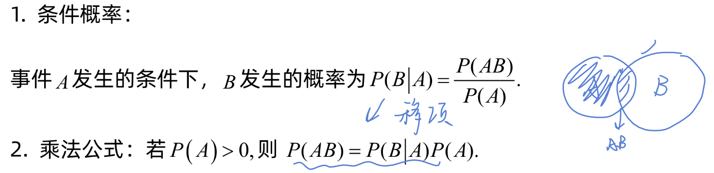
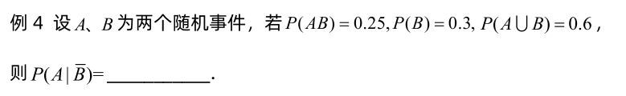
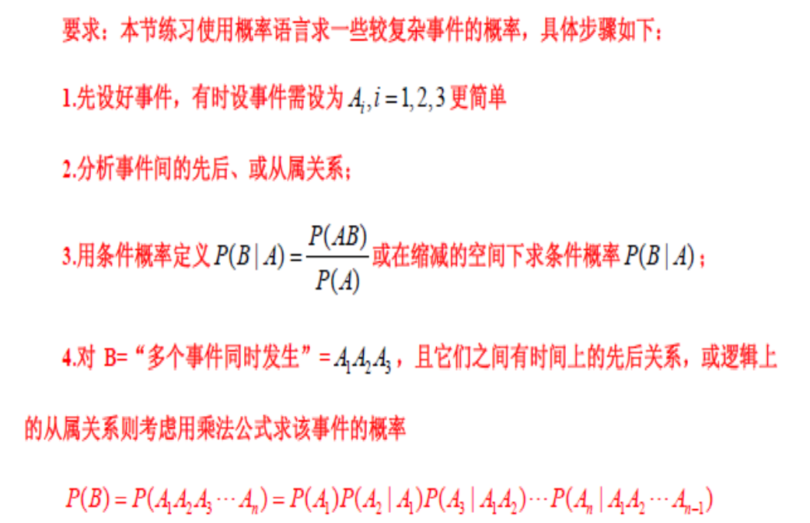

性质
P(Bˉ∣A)=1−P(B∣A)=1−P(A)P(AB)
P(Bˉ∣A)=P(A)P(ABˉ)=P(A)P(A(S−B))=P(A)P(A−AB)=减法公式P(A)P(A)−P(AB)=1−P(A)P(AB) P(B∪C∣A)=P(B∣A)+P(C∣A)−P(BC∣A)
P(A)P((B∪C)A)=P(A)P(AB∪AC)=P(A)P(AB)+P(AC)−P(ABC)=P(B∣A)+P(C∣A)−P(BC∣A) 乘法公式
P(AB)=P(A)∗P(B∣A) P(ABC)=P(AB)∗P(C∣AB)=P(A)∗P(B∣A)∗P(C∣AB) 综合运用

总结
